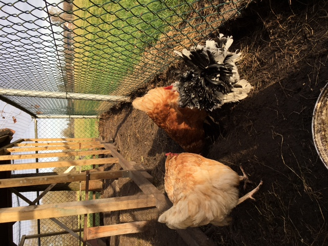
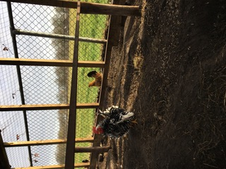

Bij ons thuis in de tuin wonen de 8 kippen met 1 haan. We hebben 3 krielkippen. De haan is ook een
krielhaantje. Hij ziet er iets anders uit dan de 3 krielkippen. We hebben ook nog 5 leghennen. Deze leggen
bijna elke dag een ei.
 